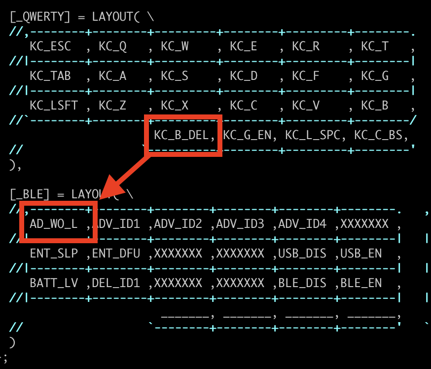

無線接続について
自作キーボードで使用するProMicroを「BLE Micro Pro」というBluetooh化をサポートするキットに乗せかえると無線化を実現できます。
Claw44でBLE Micro Proを使えるようにしたログになります。
（以下、BMPと略すことがあります）
公式サイトが充実しているので、まずはこちらをご確認ください。
はじめに - BLE Micro Pro
BMPを使うには電源を確保しないといけないのですが、Claw44につける場合は「電池基板」を利用するのがおすすめです。 ProMicroの上に乗せることができるので、基本的な形状を変えないまま使用することができます。
実装
必要な部品
- BLE Micro Pro本体 x 2
- 電池基板 x 2
- CR1632コイン電池 x 4
- スプリングピンヘッダ（コンスルー）12ピン x 4
- ピンヘッダ
スプリングピンヘッダ（コンスルー）
- BMP側もスプリングヘッダピン対応されているので、はんだ付けは不要らしいです。
- 基本的にProMicroと扱いは同じなので、取り付ける向きはhelixのビルドガイド を参考にさせていただきました。
- ProMicroと違い、電源供給用のピン（BAT,GND）がありますが、これは電池基板に繋げるのでスプリングピンヘッダは刺さないでください。（BMP対応している基板では13ピンのスプリングピンヘッダを使って刺すこともありますがClaw44では刺しません）

電池基板
部品の取り付け
-
全体としてはこんな感じです
-
ダイオード
-
片側に予備ハンダをする
-
ダイオードは向きがあるので注意。白線のある方を白丸側にする。（見にくい場合はスマホのライトとかで光を当てるとわかりやすいです。）
-
予備ハンダを利用してダイオードをはんだづけ

-
もう片方もはんだ付け。浮かないように両側をはんだして密着させる。

-
-
スイッチ
- 穴があって、ピタッとハマるのでわかりやすいと思います。各パッドをはんだ付け。
- 穴があって、ピタッとハマるのでわかりやすいと思います。各パッドをはんだ付け。
-
コンデンサ
- コンデンサは向きがありません
- 盛りはんだをして

- ダイオードと同様にはんだ付けします

-
電池ホルダ
- 乗っけて

- 裏側の各パッドをはんだ付け
- 乗っけて
-
絶縁
- BMPと接触する部分はこのままだとショートするので、ビニールテープか何かで絶縁します。カプトンテープなど薄いものだと揺れた時にうるさいので、少し厚めでショックを吸収してくれるものにしてみました。

- BMPと接触する部分はこのままだとショートするので、ビニールテープか何かで絶縁します。カプトンテープなど薄いものだと揺れた時にうるさいので、少し厚めでショックを吸収してくれるものにしてみました。
BMPと合体
- 今回はどのご家庭にもあるProMicroに付属しているピンヘッダを使ってみました。（もう少し低いものの方がジャストフィットするので、可能であれば秋月電子などで買うと良いと思います）
- ピンヘッダを切り出す

- BMPに取り付ける
- 電池基板を乗せる
- はんだ付けする
- 反対側もはんだ付け

- 不要な足を切る
- 電池の通り道は邪魔にならないように深く切る

- 電池を入れる

- ピンヘッダ側が浮いているので、やはりもう少し短い方が良さそうですね
- Claw44に取り付ける
ファームウェアの書き込み
ファームウェア書き込みは公式サイトを参照してください。
はじめに - BLE Micro Pro
ペアリング
- 左右間のペアリング
- まずは左右のBMP同士をペアリングします。左右のBMPのスイッチを入れると自動的にペアリングされます
- PCとのペアリング
- keymapでアサインしたAD_WO_Lを押すとペアリングモードに入ります。
- Claw44のdefaultの場合、下記のようにレイヤーを切り替えて左上のキーを押します。

- Bluetoothの設定にClaw44が出てくるので接続します
ProMicroプレート
- ProMicroプレートのスペーサーを11〜12mmくらいの物を用意すれば今までのようにプレートをつけることができます。
最終更新 June 26, 2019